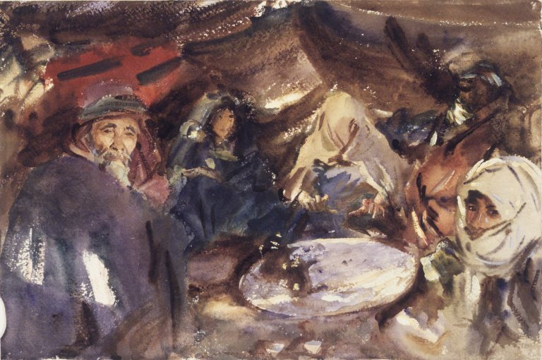

<head>
<meta charset="UTF-8" />
<meta name="keywords" content="drawing, painting" />
<meta name="description" content="drawings by Sunjy" />
<title>Sunjy</title>
<link rel="shortcut icon" type="image/x-icon" href="../../mImages/mCommon/favicon.ico" media="screen" />
<link rel="stylesheet" type="text/css" href="../../mCsses/mCommon/mCssA.css" />
<link rel="stylesheet" type="text/css" href="../../mCsses/mCommon/mCssB.css" />
<link rel="stylesheet" type="text/css" href="../../mCsses/mCommon/mCssC.css" />
<link rel="stylesheet" type="text/css" href="../../mCsses/mCommon/mCssD.css" />
<link rel="stylesheet" type="text/css" href="../../mCsses/mContent/mCssA.css" />
<link rel="stylesheet" type="text/css" href="../../mCsses/mContent/mCssB.css" />
<link rel="stylesheet" type="text/css" href="../../mCsses/mContent/mCssC.css" />
<link rel="stylesheet" type="text/css" href="../../mCsses/mContent/mCssD.css" />
</head>
<script type="text/javascript" src="../../mScripts/mContent/mContentAA.js" /></script>
<script type="text/javascript" src="../../mScripts/mContent/mContentAB.js" /></script>
<script type="text/javascript" src="../../mScripts/mContent/mContentAC.js" /></script>
<script type="text/javascript" src="../../mScripts/mContent/mContentAD.js" /></script>
<script type="text/javascript"></script> 
<script type="text/javascript">
document.write('<div class="mImgAbsolute"></div>');
/*
document.write('<p class="mFontSizeBColor" />From a white paper...</p>');
document.write('<table class="center"><tr><td>');
document.write('');
document.write('</td></tr></table>');
*/
</script>


<script type="text/javascript">
document.write('<p class="mFontSizeBColor" />Arab Gypsies in a Tent</p>');
document.write('<p class="mFontSizeSColor" />“Arab Gypsies in a Tent” by John Singer Sargent. With his Bedouin series, Sargent used the expressive power of the robed figures animated by intense piercing light.<br><br>He used the tents as a background framework to focus on the composition. In this watercolor of “Arab Gypsies in a Tent” features a hooded Gypsy, whose hands are brilliantly portrayed over the round shape of a tray.<br><br>In art history, Orientalism is the depiction usually done by artists from the West depicting subjects of “the Middle East.”<br><br>Art historians tend to classify two broad types of Orientalist artists: the realists who carefully painted what they observed and those who imagined Orientalist scenes without ever leaving the studio.<br><br>These Sargent watercolors are romanticized orientalist narratives. He created them during his travels to the Middle East and North Africa during 1905 – 1906.<br></p>');
document.write('<table class="center" /><tr><td>');
document.write('<br>He used the tents as a background framework to focus on the composition. In this watercolor of “Arab Gypsies in a Tent” features a hooded Gypsy, whose hands are brilliantly portrayed over the round shape of a tray.<br><br>In art history, Orientalism is the depiction usually done by artists from the West depicting subjects of “the Middle East.”<br><br>Art historians tend to classify two broad types of Orientalist artists: the realists who carefully painted what they observed and those who imagined Orientalist scenes without ever leaving the studio.<br><br>These Sargent watercolors are romanticized orientalist narratives. He created them during his travels to the Middle East and North Africa during 1905 – 1906.<br>" />');
document.write('</td></tr></table>');
</script>


